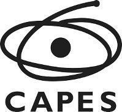
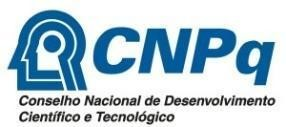

Educação e Pesquisa

 Educação e Pesquisa
Educação e Pesquisa
Publicación de: Faculdade de Educação da Universidade de São PauloÁrea: HUMAN SCIENCES

Acerca del periódico
Educação e Pesquisa es una revista de la Facultad de Educación de la Universidad de São Paulo - FEUSP. Desde 2018, se publica ininterrumpidamente en un único volumen anual. En la evaluación Qualis Capes (2017-2020), Educação e Pesquisa mantuvo su clasificación como A1 en el área de Educación. El título abreviado de la revista es Educ. Pesqui, que debe utilizarse en bibliografías, notas a pie de página, referencias y tiras bibliográficas. |
Editada desde 1975, aún con el nombre de Revista da Faculdade de Educação, la revista tenía como principal objetivo la publicación de trabajos producidos por profesores de la FEUSP. A partir de 1996, comenzó a publicar artículos de investigadores de otras instituciones, incluso extranjeras. En esa época también se restableció el Consejo Editorial, que pasó a incluir investigadores de instituciones nacionales e internacionales, además de profesores de la propia facultad. En 1999 se actualizó su proyecto editorial, tomando como referencia las normas vigentes para las publicaciones científicas internacionales. La revista también pasó a publicarse electrónicamente y fue incluida en la biblioteca SciELO, con acceso abierto al público. Esto amplió la difusión de las ediciones, así como el intercambio con investigadores nacionales y extranjeros, y permitió su indexación en las principales bases de datos. A partir de entonces pasó a llamarse Educação e Pesquisa. Hasta 2004, la revista Educação e Pesquisa se publicaba semestralmente, cuando pasó a ser cuatrimestral. En 2010, pasó a ser trimestral y actualmente se publica en flujo continuo, en un único volumen anual. De esta forma, los trabajos aprobados y editados se incluyen inmediatamente en un volumen específico de la revista, lo que contribuye a agilizar los procesos de edición y divulgación de los trabajos aprobados para su publicación. Desde 2010, utiliza el sistema SciELO Submission para recibir y procesar las evaluaciones de los artículos. Esto ha contribuido a la profesionalización de su proceso de envío de artículos. La revista está indexada en las principales bases de datos internacionales y nacionales, lo que amplía significativamente la difusión de los números, así como el intercambio con investigadores nacionales y extranjeros. Esto convierte a Educação e Pesquisa en una de las principales revistas del ámbito educativo brasileño, calificada A1 por el sistema de evaluación CAPES. La amplitud del alcance de las producciones publicadas por Educação e Pesquisa es tal vez una de sus principales características, considerando las contribuciones que ofrece al divulgar resultados relevantes de investigaciones producidas en las más diversas áreas del campo educacional. En su funcionamiento, procuramos que la composición de la Comisión Editorial, así como del Consejo editorial y del cuerpo de revisores, responda lo más cualitativamente posible a la naturaleza específica de la revista. Editores responsables de la revista desde su creación:
|
Conformidad con la ciencia abierta
La revista Educação e Pesquisa recibe y evalúa producciones originales en el campo de la educación que se ajusten a las prácticas de comunicación de la Open Science. Los originales enviados a la revista deben ser inéditos (en forma impresa o electrónica), aunque se aceptan para evaluación archivos previamente puestos a disposición en servidores de preprints mantenidos por instituciones públicas que no cobran por su publicación. No se permite el envío simultáneo a ninguna otra revista durante el proceso de evaluación o publicación. Se ruega a los autores que pongan a disposición todo el contenido (datos, código del programa y otros materiales) subyacente al texto del manuscrito antes o en el momento de su publicación. Se permiten excepciones en casos de cuestiones legales y éticas. Esta solicitud tiene dos objetivos principales: facilitar la evaluación del manuscrito y, si se aprueba, contribuir a la preservación y reutilización de los contenidos y a la reproducibilidad de la investigación. Los trabajos publicados en las actas de reuniones científicas se aceptan previa solicitud, siempre que la versión presentada presente modificaciones claras y sustanciales, de modo que ofrezca una proporción significativa de elementos inéditos que justifiquen una nueva publicación. El Consejo Editorial es responsable de decidir la publicación o no de los manuscritos, basándose en la evaluación de los revisores ad hoc. Esta revista sigue el modelo Gold Open Access. Formulario de conformidad con la Ciencia Abierta: https://wp.scielo.org/wp-content/uploads/Formulario-de-Conformidade-Ciencia-Aberta.docx |
Las políticas editoriales de Educação e Pesquisa han sido establecidas de acuerdo con las directrices del Comité de Ética de Publicaciones (COPE) y de la Scientific Electronic Library Online (Scielo), así como con las directrices del Consejo Nacional de Desarrollo Científico y Tecnológico (CNPq) y el manual de buenas prácticas de la Fundación de Investigación del Estado de São Paulo (FAPESP). La revista protege su proceso editorial de intereses comerciales o financieros. Los autores deben cumplir con los requisitos de originalidad, dar el debido crédito a las fuentes de datos, investigaciones y trabajos intelectuales de cualquier tipo utilizados en el texto y garantizar que todas las citas y referencias estén debidamente explicadas, de acuerdo con la normalización bibliográfica de la ABNT (Asociación Brasileña de Normas Técnicas), NBR 10520 y NBR 6023. El autor del manuscrito es responsable por verificar, registrar y obtener las debidas autorizaciones de uso o cesión de derechos de autor, cuando corresponda. En el caso de investigaciones que impliquen la participación de seres humanos, es obligatorio que el autor explique que se ha obtenido la autorización de estas personas para utilizar la información con fines de investigación, y también es obligatorio informarles del cuidado que se ha tenido para garantizar la preservación de la identidad de los participantes, incluido el cuidado para garantizar que las imágenes obtenidas durante la recogida de datos se incluyan en el texto. Las decisiones y procedimientos éticos se basan en los siguientes documentos: - Resolución CNS Nº 466/2012 (Ética en la Investigación con Seres Humanos); El proceso de evaluación inicial se realiza mediante el sistema «i-Thenticate», que comprueba las similitudes de los manuscritos presentados antes de enviarlos a los revisores. Pueden utilizarse otras herramientas de detección de similitudes a discreción de la revista. Si se detectan similitudes, plagio o autoplagio, el manuscrito será rechazado sumariamente y se impedirá a los autores enviar otros textos a Educação e Pesquisa. A lo largo de todo el proceso, el equipo editorial se guía por los principios de imparcialidad, integridad y confidencialidad en los procesos de procesamiento, evaluación y toma de decisiones, procurando cumplir los plazos establecidos por la revista. Para garantizar el cumplimiento de las buenas prácticas de investigación, Educação e Pesquisa solicita que, al someter manuscritos a la revista, el autor declare: la aceptación de la responsabilidad por el contenido del manuscrito; la aprobación de la investigación, cuando realizada con seres humanos, por una Comisión o Comité de Ética en Investigación; y la ausencia de conflictos de intereses con el resultado presentado en el manuscrito, informando la institución a la que el autor está vinculado o que colaboró en la realización del estudio. Respecto al uso de inteligencia artificial en manuscritos enviados a Educação e Pesquisa: El periódico Educação e Pesquisa permite el uso de herramientas de inteligencia artificial exclusivamente para funciones de apoyo, como la edición de idioma, el formato, la estandarización de referencias y la organización del texto. Se prohíbe el uso de estas herramientas para la generación de datos, la producción de resultados, la formulación de hipótesis originales o análisis no verificados. Los autores deben declarar explícitamente, al momento del envío, la herramienta utilizada y su propósito, asumiendo plena responsabilidad por la integridad, originalidad y veracidad del contenido presentado. El incumplimiento de estas directrices resultará en el rechazo inmediato del manuscrito. Si posteriormente se comprueba el uso indebido de herramientas de inteligencia artificial en un artículo previamente publicado, la revista lo retractará. Todos los autores, incluso aquellos que no utilizaron Inteligencia Artificial en el artículo, deben completar el Formulario de declaración de uso de IA y enviarlo junto con los archivos de envío. 1. Para el envío de artículos (transparencia con el comité editorial): Declaración sobre el uso de la inteligencia artificial: Las herramientas no se han empleado para la generación de datos, la formulación de hipótesis originales, la realización de análisis científicos ni la interpretación de resultados. Todas las contribuciones producidas por las herramientas han sido revisadas críticamente por los autores, quienes asumen toda la responsabilidad por la integridad y originalidad del contenido. 2. Para incluir en el propio manuscrito (transparencia con el lector. Debe aparecer en la sección de notas o agradecimientos): Nota sobre el uso de la inteligencia artificial: Parte de la revisión lingüística y la organización del texto de este manuscrito se realizó con la ayuda de la(s) herramienta(s) [nombre(s) de la(s) herramienta(s)], utilizada(s) estrictamente como recurso auxiliar. El contenido, las interpretaciones y las conclusiones son responsabilidad exclusiva de los autores. Conflictos de interesesSi la investigación realizada o la publicación del artículo suscitan dudas sobre posibles conflictos de intereses, el autor debe declarar en una nota final que no se han omitido vínculos con organismos de financiación, instituciones comerciales o políticas. El proceso editorial de Educação e Pesquisa utiliza mecanismos para eximirse de conflictos de intereses. Así, la elección del editor que se encarga del tratamiento de un manuscrito tiene en cuenta las relaciones personales y profesionales entre esta persona y los autores del texto. |
Educação e Pesquisa publica artículos inéditos de investigación en el campo de la educación, escritos en portugués, español o inglés, resultantes de estudios teóricos o empíricos, o de revisiones bibliográficas. Los artículos deben establecer un diálogo consistente con el campo de la educación, detallando el trabajo conceptual y metodológico, explicando los procesos analíticos, así como la relevancia de las contribuciones para el desarrollo del conocimiento en Educación. |
Esta revista sigue las normas definidas en la Política de Preservación Digital del Programa SciELO. Utiliza el sistema LOCKSS - PKP Preservation Network como estrategia de preservación digital de sus contenidos a través de la Agencia de Bibliotecas y Colecciones Digitales de la USP. También utiliza el DOI como identificador digital de los objetos, además de vincular la publicación al ORCiD de los autores. |
Indexadores de metadatos
Indexadores métricos
Versiones en línea: |
E24 Educação e Pesquisa: Revista da Faculdade de Educação da USP = Educação e Pesquisa / São Paulo: FE/USP, 1975. Continua y solo en línea a partir de 2018. ISSN: 1517-9702 (Impresso)
CDD 22ª ed. 37 |
|
Patrocinadores y organismos de financiación
La revista recibe apoyo financiero de:     |